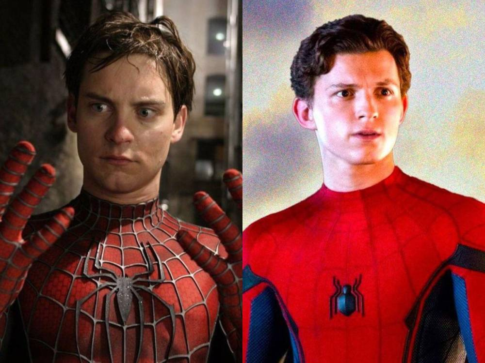

La pareja mantuvo un romance de cinco meses durante el año 2019. Los rumores de una relación entre ambas artistas comenzaron a circular en 2019, cuando fueron fotografiadas juntas en Los Ángeles en varias ocasiones. Sin embargo, ninguna de las dos había confirmado la noticia hasta ahora. En la entrevista, Schafer ha querido dejar claro que, a pesar de que la relación no haya funcionado, sigue manteniendo una estrecha amistad con Rosalía.

LOS ÁNGELES, ESTADOS UNIDOS.- La actriz Rebel Wilson popularmente conocida por su participación en la cinta “Ritmo perfecto”, en la que interpretó a la “Gorda Amy”, está en boca de todos por las declaraciones realizadas en su libro de memorias, titulado Rebel Rising. En uno de los extractos obtenidos por medios locales, la actriz abordó un tema concerniente a la cantante Adele que ha llamado la atención de propios y extraños.
LOS ÁNGELES, ESTADOS UNIDOS.- Kanye West es demandado por discriminación racial en perjuicio de Trevor Phillips, un antiguo colaborador. El demandante asegura que fue humillado ante al menos 100 personas y presenció escenas homofóbicas y antisemitas por parte de West. “Durante su mandato, Phillips nunca vio a West gritar y reprender a una persona blanca, pero en innumerables ocasiones vio y/o experimentó personalmente a Kanye gritar frenéticamente a los negros”, afirma el documento judicial.

TEGUCIGALPA, HONDURAS.- Por primera vez en Honduras, se presenta este 6 y 7 de abril “La Magia Del Reino Encantado”, el concierto en vivo que reúne a los musicales favoritos de grandes y chicos, donde las familias se darán cita en dos fechas únicas en las ciudades de Tegucigalpa y San Pedro Sula; una producción a cargo de Mon Espectáculos y Vivo Espectáculos.
Esta maravillosa obra se llevará a cabo el sábado 6 de abril en el Teatro Nacional Manuel Bonilla, de Tegucigalpa, y el domingo 7 de abril en el Centro Cultural Sampedrano, de San Pedro Sula, teniendo cada una de las fechas un total 3 funciones en los siguientes horarios: 11:30 a.m., 03:00 p.m. y 05:30 p.m.
Los boletos ya están a la venta y puedes adquirir tus entradas en www.bmtickets o en los kioscos de BMTickets, ubicados en Torre Morazán y City Mall en Tegucigalpa, o en el kiosco de City Mall en San Pedro Sula, y todas las localidades cuentan con un 15% de descuento de preventa en el mes de febrero, pagando en efectivo o con cualquier tarjeta de crédito o débito.
Los personajes Bruno y Mirabel de Encanto forman parte de los artistas que vienen de países como: Venezuela, Perú y Colombia.
La Gran Gala del Reino Encantado recorrerá varios países de Latinoamérica con un despliegue de tecnología importante que llevará al público asistente a reír, llorar, cantar y disfrutar de más de una hora de espectáculo con las mágicas historias de los cuentos más importantes que han acompañado a padres e hijos durante años. El público podrá disfrutar los musicales de “Encanto”, “Frozen”, entre otros y, ver en vivo a personajes entrañables.
La puesta en escena del Reino Encantado cuenta con más de 25 artistas internacionales, una propuesta de música, magia, color, efectos especiales y voces en vivo para crear un show único en nuestra región.
La producción está a cargo de las productoras Mon Espectáculos y Vivo Espectáculos, quienes tienen una amplia trayectoria en el montaje de espectáculos de primer nivel, recorriendo países como Colombia, Perú, Ecuador, Panamá, Costa Rica, Guatemala y El Salvador.
La Gran Gala del Reino Encantado recorrerá varios países de Latinoamérica con un despliegue de tecnología importante que llevará al público asistente a reír, llorar, cantar y disfrutar de más de una hora de espectáculo.

Se espera que los procesadores AMD Ryzen basados en la arquitectura Zen 5 empiecen a ser comercializados durante la segunda mitad del presente año 2024 para equipos sobremesa, dispositivos portátiles y servidores. Aparte de eso, el probable uso del proceso de fabricación de 3nm de TSCM apunta a dar aportar mejoras tanto en rendimiento como en eficiencia.
¿Cuánta mejora apunta a aportar Zen 5 en comparación con Zen 4? Según una publicación del filtrador @Kepler_L2 que ha aparecido en los foros de Anandtech, los procesadores AMD Ryzen basados en la arquitectura Zen 5 superan en más de un 40% el rendimiento que ofrecen los procesadores de la misma marca basados en Zen 4 sobre la prueba de rendimiento SPEC. Este dato no está nada mal y resulta prometedor, pero es importante cogerlo con pinzas debido a que se trata de una prueba sintética, y además el filtrador no ha publicado si son métricas de enteros o de punto flotante.

Creo que, llegados a este punto, la mayoría ha asumido que referirse a Twitter como X solo sirve para que, en bastantes ocasiones, sea necesario hacer la precisión de que nos estamos refiriendo a «la red social anteriormente conocida como Twitter». Y esto, en verdad, es más significativo de lo que podría parecer en un primer momento, pues este cambio de nombre pretendía simbolizar la evolución de Twitter hacia lo que Elon Musk había proyectado para la red social.
¿Y qué planes eran esos? Pues ya lo pudimos leer en su momento, crear una especie de ágora digital, un espacio de intercambio de conocimiento y opiniones, por supuesto libre de los tan molestos bots, y que en consecuencia fuera una herramienta que aportara mucho, y muy bueno, a la sociedad. Y, claro, que además le aportara una gran rentabilidad, pues la inversión que tuvo que afrontar para realizar la compra fue más que sustancial, al punto de que la mayoría de analistas coinciden en que la oferta de compra que hizo estaba bastante por encima del valor real de Twitter.
El director Sam Raimi pone fin a los rumores sobre el regreso de Tobey Maguire a su versión del Hombre Araña. ¿Qué dijo el creador de Spider-Man 2 al respecto?
LOS ÁNGELES, ESTADOS UNIDOS.- En redes sociales aún circulan rumores sobre el regreso de Tobey Maguire al papel principal de Spider-Man: 4 bajo la dirección de Sam Raimi, para completar el dúo. Con una exitosa recaudación en taquillas con Spider-Man (de 2002 y 2007) la fusión de Raimi y Maguire regresaría, apuntan estas teorías.
Aún cuando el director si estuvo desarrollando la cuarta parte de la cinta del “Hombre araña”, el proyecto a su favor fue descartado por lo que el mismo Raimi se encargó de desmentir todas las teorías que deambulaban en internet. “Bueno, todavía no he oído hablar de eso. Leí eso, pero todavía no estoy trabajando en ello. Quiero decir, Marvel y Columbia tienen tanto éxito con las (películas) actuales de Spider-Man y la pista allí, y no sé si volverán a mí y me dirán: ‘Bueno, amigos, ¡También podemos contar esa historia!”, relató el director en una entrevista para CBR.
Además, aseguró no haber hablado con Maguire sobre la posibilidad de regresar para una cuarta parte juntos. “Acabo de trabajar con Marvel en una película llamada Doctor Strange in the Multiverse of Madness. Así que me llevo muy bien con ellos. Estoy seguro de que me enteraría si estuviera en proceso”, agregó.
La barranquillera asegura que tanto hombres como mujeres tienen un propósito.
BARRANQUILLA, COLOMBIA.- Aunque se convirtió en todo un fenómeno en las salas de cine, la película Barbie no ha estado exenta de polémicas. Y esta vez la cantante Shakira dio una opinión que sorprendió a muchos. En medio de una entrevista para la revista estadounidense Allure, la barranquillera fue consultada sobre qué le pareció la popular cinta protagonizada por Margot Robbie, y su respuesta ha acaparado titulares.
“Mis hijos la detestaron absolutamente. Sintieron que era mala representación. Y estoy de acuerdo, hasta cierto punto. Estoy criando a dos niños. Quiero que ellos también se sientan poderosos respetando a las mujeres”, introdujo la cantante.
La cinta Barbie fue la más taquillera de todo 2023, pero también recibió críticas divididas.
Luego, agregó: “Me gusta la cultura pop cuando intenta empoderar a las mujeres sin privar a los hombres de su posibilidad de ser hombres, de proteger y proveer también. Creo en darle a las mujeres todas las herramientas y la confianza de que podemos hacerlo todo sin perder nuestra esencia, sin perder nuestra feminidad”.
Y aunque siempre ha demostrado estar a favor de la lucha por la equidad de género y el empoderamiento femenino, la artista expresó: “Creo que los hombres tienen un propósito en la sociedad y las mujeres también tienen otro propósito. Nos complementamos y ese complemento no debe perderse”.
Las opiniones de la cantante han sido aplaudidas por muchos, sobre todo por sus seguidores, pero era de esperarse que también recibiera algunos comentarios negativos de parte de los fanáticos del fenómeno rosa.
NUEVA YORK, ESTADOS UNIDOS.- La cantante estadounidense Taylor Swift ingresó oficialmente al grupo de multimillonarios, según la más reciente clasificación de las fortunas de las celebridades del mundo de la revista Forbes. Con un patrimonio neto estimado en 1,100 millones de dólares, Swift se convierte en la primera artista -hombre o mujer- que ha superado el umbral de las diez cifras gracias únicamente a los ingresos procedentes de su música.
Katy Perry enciende la alfombra roja de los iHeartRadio Music Awards con un vestido de rejilla que deja poco a la imaginación. La cantante de 39 años llegó al Dolby Theatre de Los Ángeles enfundada en un espectacular vestido de rejilla negro brillante, que resaltaba su figura tonificada y dejaba a la vista su ropa interior negra.